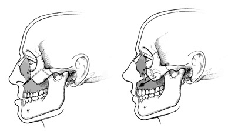
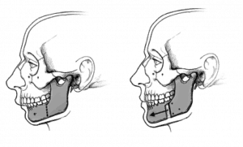
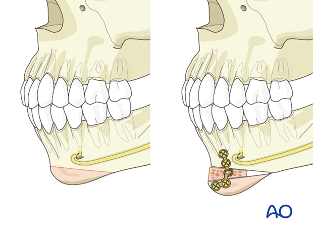
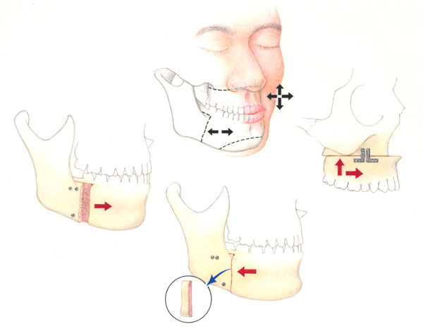

Maxillary Osteotomy (Upper Jaw Surgery)

Maxillary osteotomy surgery corrects a severely receded upper jaw. During the procedure, an oral surgeon makes an incision in the gums above the teeth in the upper jaw...
Mandibular Osteotomy (Lower Jaw)

Mandibular osteotomy surgery corrects a severely receded lower jaw. During the procedure, an oral surgeon moves the lower jawbone forward or backward, depending on the patient’s bite alignment.
Genioplasty (Chin Surgery)

Similar to mandibular osteotomies, genioplasties also correct severely receded lower jaws. During this procedure, an oral surgeon restructures the jaw and chin. Often times, an oral surgeon combines lower jaw surgery and chin surgery into the same operation.
Bi-maxillary Osteotomy (Double Jaw Surgery)

Double jaw surgery is also known as Bi-maxillary Osteotomy. It is a specific type of orthognathic or corrective jaw surgery. Often, oral surgeons perform surgery on one jaw at a time. Double jaw surgery is when they perform surgery on both jaws simultaneously. The purpose of double jaw surgery is to correct both aesthetic and functional skeletal issues. A common condition double jaw surgery addresses is a protruding jaw, which causes an abnormal bite, called a malocclusion.